Villa Natura
Dom otwarty na ogród. Dębowe belki, trawertyn i światło, które przez cały dzień zmienia charakter wnętrza.
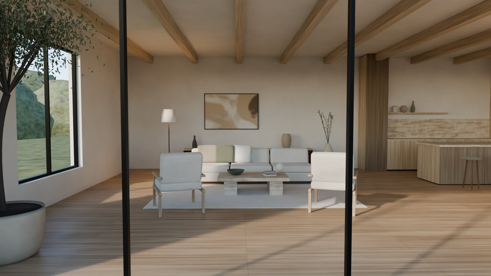
Projektujemy wnętrza, które opowiadają historię ich mieszkańców.
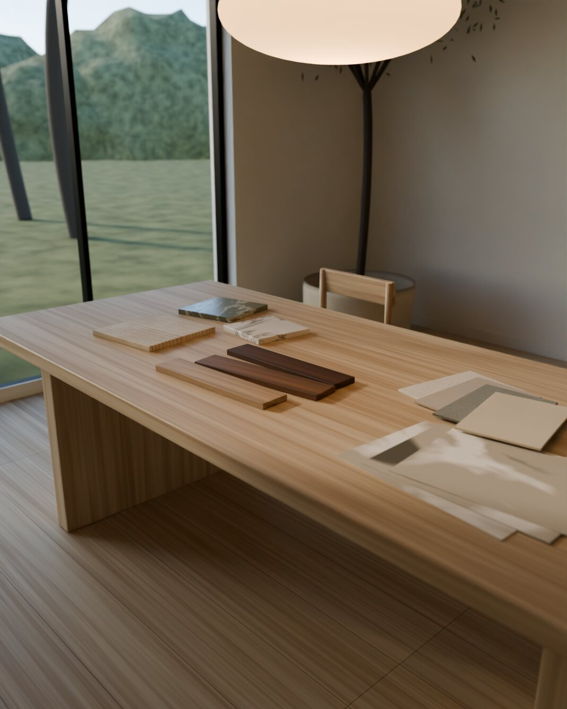
Zanim narysujemy pierwszą linię, spędzamy czas w Twoim wnętrzu. Sprawdzamy, skąd przychodzi światło, jak poruszasz się między pomieszczeniami i co naprawdę jest dla Ciebie ważne.
Prowadzimy projekt kompleksowo: od koncepcji i wizualizacji, przez dokumentację techniczną, po zamówienia, koordynację wykonawców i nadzór. Dzięki temu efekt końcowy wygląda dokładnie tak, jak go zaplanowaliśmy.
Domy i apartamenty, w których pracowaliśmy od pierwszego szkicu do ostatniej lampy. Każdy projekt to inna historia i inny zestaw materiałów.
Dom otwarty na ogród. Dębowe belki, trawertyn i światło, które przez cały dzień zmienia charakter wnętrza.
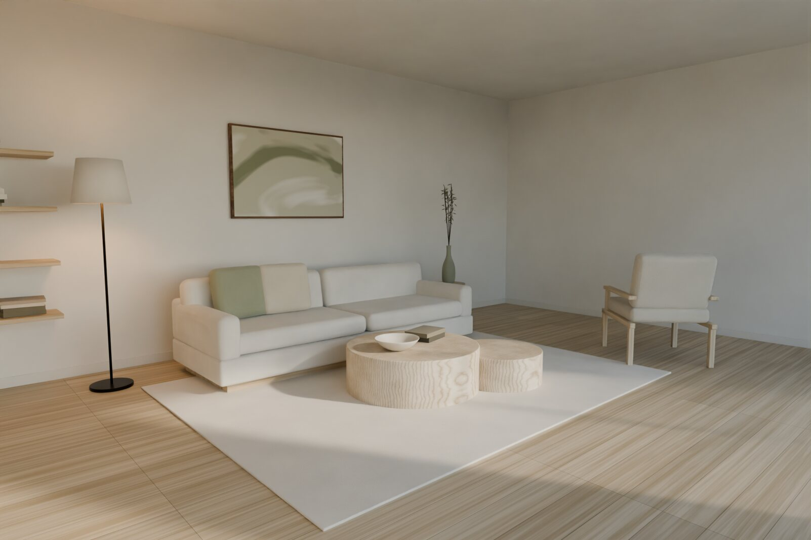
Jasny jesion, len i szałwiowa zieleń. Apartament zaprojektowany wokół porannego światła.
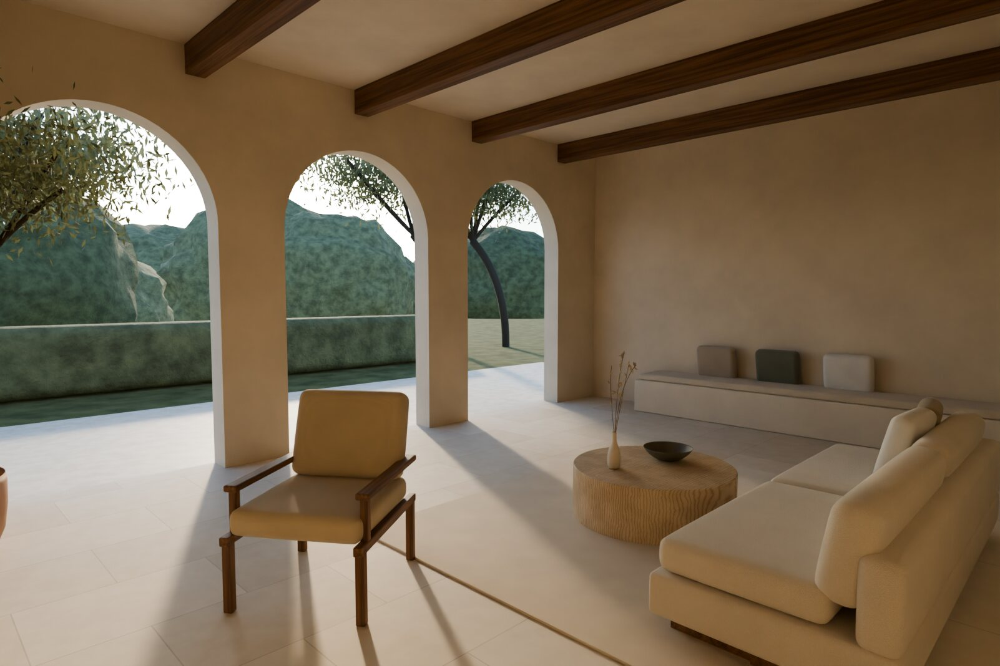
Łuki, wapienne posadzki i piaskowe tynki. Dom, który przypomina późne, ciepłe popołudnie.
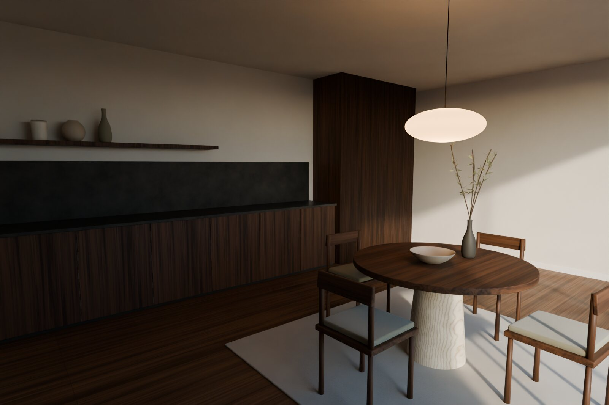
Orzech, grafitowy kamień i miasto za oknem. Kompaktowe mieszkanie o charakterze wieczornego salonu.
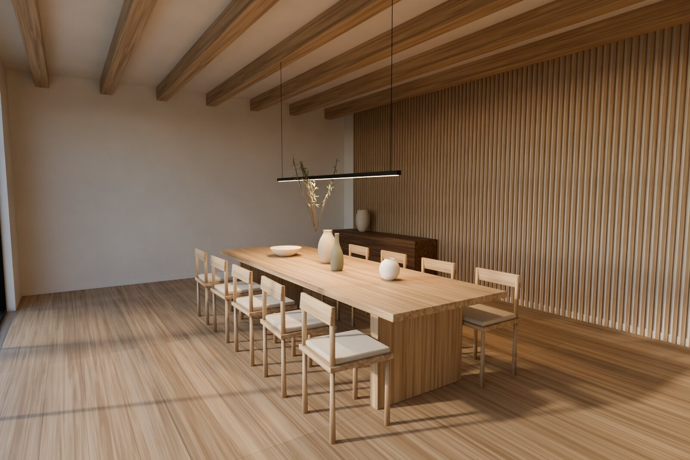
Dąb w roli głównej: lamele, belki i długi stół, przy którym spotyka się cała rodzina.
Każdą realizację prowadzimy do końca: od pomiaru po ustawienie ostatniego wazonu.
Wszystkie realizacje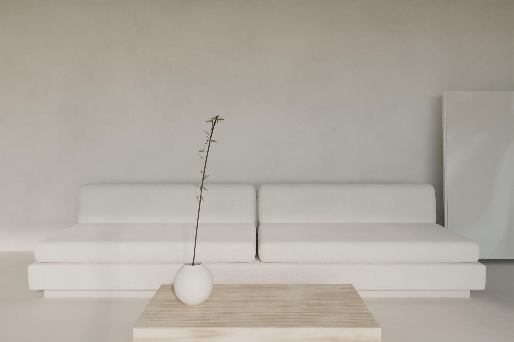
Mikrocement, bouclé i pustka, która daje odpocząć. Minimalizm, który nie jest chłodny.
Cztery sposoby współpracy, od jednej konsultacji po wnętrze oddane pod klucz. Każdą wycenę przygotowujemy indywidualnie, po rozmowie i obejrzeniu przestrzeni.
Dla osób, które chcą zobaczyć potencjał swojego wnętrza, zanim zapadną decyzje budowlane. Opracowujemy układ funkcjonalny, paletę materiałów i nastrój, który zostanie z Tobą na lata.
Pięć etapów, które prowadzą od pierwszej rozmowy do gotowego wnętrza. Na każdym z nich wiesz, co już zrobiliśmy i co wydarzy się dalej.
01
Poznajemy Twój styl życia, przyzwyczajenia i plany. Ustalamy zakres, budżet i harmonogram.
02
Mierzymy, fotografujemy i sprawdzamy instalacje. Szukamy światła, osi widokowych i ograniczeń.
03
Pokazujemy układ, materiały i nastrój na wizualizacjach. Dopracowujemy je razem z Tobą.
04
Rysujemy każdy detal dla wykonawców i przygotowujemy zestawienie materiałów oraz wyposażenia.
05
Koordynujemy prace, kontrolujemy jakość na budowie i stylizujemy wnętrze na koniec.
Nie mamy stylu katalogowego. Każde wnętrze zaczynamy od Twoich nawyków, a nie od trendów.
Wybieramy materiały, które starzeją się szlachetnie: kamień, drewno, len, tynk wapienny.
Rysujemy połączenia, cokoły i uchwyty, bo to one decydują o tym, jak wnętrze się odbiera.
Jeden zespół od pierwszego szkicu do odbioru, z jasnym harmonogramem i stałym kontaktem.
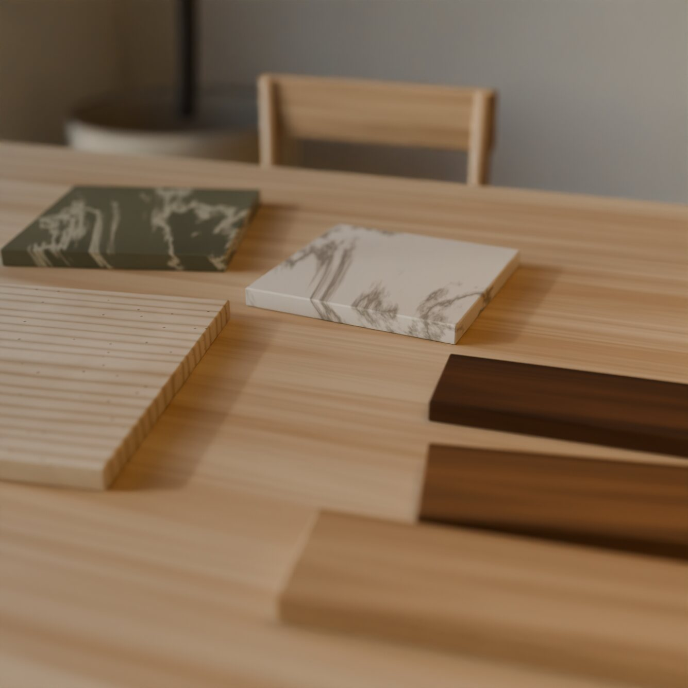
„Najbardziej ceniliśmy spokój. Zespół zawsze wiedział, co dzieje się na budowie, a my mogliśmy skupić się na wyborze materiałów i na tym, jak chcemy w tym domu żyć.”
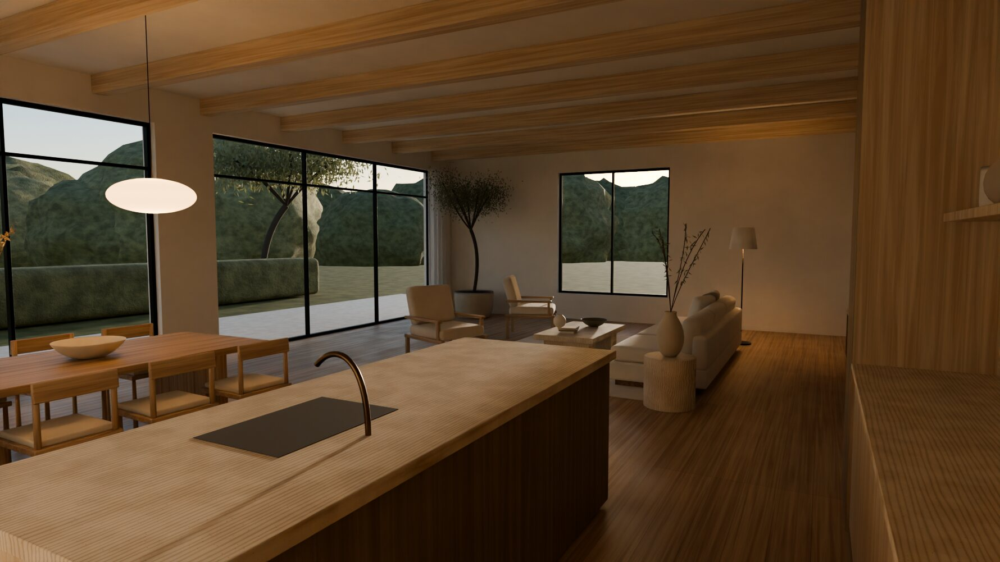
Opowiedz nam o swoim wnętrzu. Odpowiemy w ciągu dwóch dni roboczych i zaproponujemy termin spotkania.
Jesteśmy pracownią architektury wnętrz z Warszawy. Projektujemy domy i apartamenty dla osób, które szukają wnętrz spokojnych, funkcjonalnych i odpornych na upływ mody.
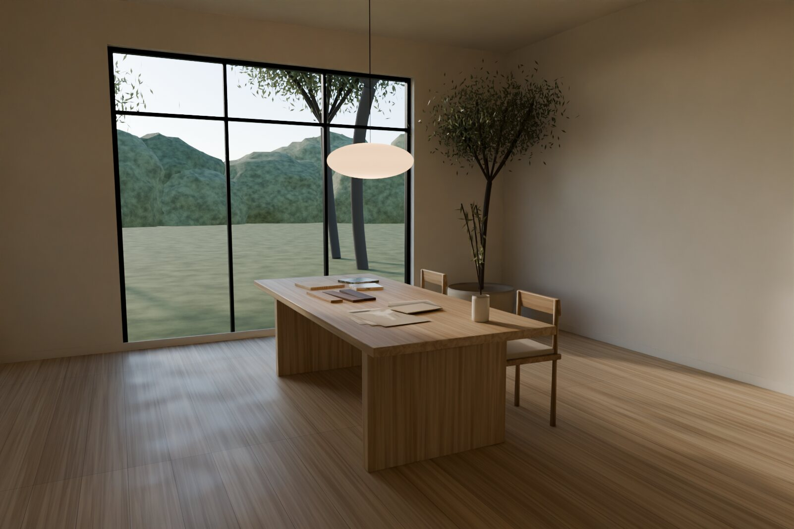
Pierwsze spotkania poświęcamy na rozmowę o tym, jak żyjesz: kiedy wstajesz, gdzie czytasz, ile osób siada do stołu w święta. Z tych odpowiedzi powstaje program wnętrza.
Pracujemy z próbkami, nie z katalogami. Kamień, drewno i tkaniny oglądasz w dziennym świetle, w swoim wnętrzu, zanim trafią na listę zamówień.
Rysujemy cokoły, styki materiałów i rozmieszczenie gniazd. Dzięki temu ekipa nie musi zgadywać, a Ty nie musisz poprawiać.
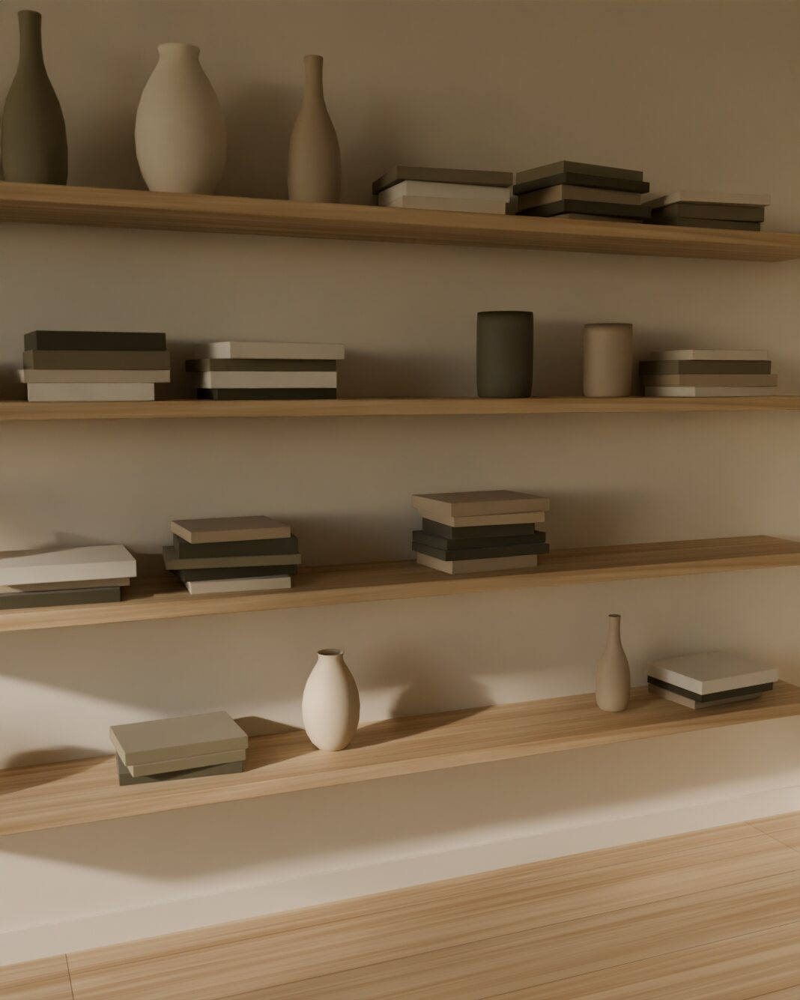
Jeden zespół prowadzi projekt od inwentaryzacji, przez koncepcję i dokumentację techniczną, po zamówienia, koordynację wykonawców i odbiory. Pracujemy w Warszawie i okolicach: w Konstancinie, Józefowie, Magdalence, Wilanowie i na Żoliborzu.
Każdy projekt prowadzi jedna architektka lub jeden architekt, który jest Twoim stałym punktem kontaktu przez cały proces.
Nie mamy stylu katalogowego. Każde wnętrze zaczynamy od Twoich nawyków, a nie od trendów.
Wybieramy materiały, które starzeją się szlachetnie: kamień, drewno, len, tynk wapienny.
Rysujemy połączenia, cokoły i uchwyty, bo to one decydują o tym, jak wnętrze się odbiera.
Jeden zespół od pierwszego szkicu do odbioru, z jasnym harmonogramem i stałym kontaktem.
Opowiedz nam o swoim wnętrzu. Odpowiemy w ciągu dwóch dni roboczych i zaproponujemy termin spotkania.
Sześć wnętrz, sześć historii. Pokazujemy domy i apartamenty, które prowadziliśmy od koncepcji po stylizację. Każdy projekt ma osobną stronę z opisem idei, materiałami i galerią.
Dom otwarty na ogród. Dębowe belki, trawertyn i światło, które przez cały dzień zmienia charakter wnętrza.
Jasny jesion, len i szałwiowa zieleń. Apartament zaprojektowany wokół porannego światła.
Łuki, wapienne posadzki i piaskowe tynki. Dom, który przypomina późne, ciepłe popołudnie.
Orzech, grafitowy kamień i miasto za oknem. Kompaktowe mieszkanie o charakterze wieczornego salonu.
Dąb w roli głównej: lamele, belki i długi stół, przy którym spotyka się cała rodzina.
Mikrocement, bouclé i pustka, która daje odpocząć. Minimalizm, który nie jest chłodny.
Opowiedz nam o swoim wnętrzu. Odpowiemy w ciągu dwóch dni roboczych i zaproponujemy termin spotkania.
Cztery formy współpracy dopasowane do etapu, na którym jesteś. Nie publikujemy cennika, bo każde wnętrze jest inne. Każdą wycenę przygotowujemy indywidualnie.
Opowiedz nam o swoim wnętrzu. Odpowiemy w ciągu dwóch dni roboczych i zaproponujemy termin spotkania.
Dobry proces daje spokój. Na każdym etapie wiesz, nad czym pracujemy, co otrzymasz i jakie decyzje są przed Tobą.
01
Poznajemy Twój styl życia, przyzwyczajenia i plany. Ustalamy zakres, budżet i harmonogram.
02
Mierzymy, fotografujemy i sprawdzamy instalacje. Szukamy światła, osi widokowych i ograniczeń.
03
Pokazujemy układ, materiały i nastrój na wizualizacjach. Dopracowujemy je razem z Tobą.
04
Rysujemy każdy detal dla wykonawców i przygotowujemy zestawienie materiałów oraz wyposażenia.
05
Koordynujemy prace, kontrolujemy jakość na budowie i stylizujemy wnętrze na koniec.
Opowiedz nam o swoim wnętrzu. Odpowiemy w ciągu dwóch dni roboczych i zaproponujemy termin spotkania.
Opowiedz nam o swoim wnętrzu. Odpowiadamy w ciągu dwóch dni roboczych i proponujemy termin pierwszej rozmowy — w pracowni, u Ciebie lub online.
ul. Mokotowska 00, 00-000 Warszawa
pon.–pt. 9:00–17:00, spotkania po wcześniejszym umówieniu
Wersja robocza przygotowana na potrzeby projektu demonstracyjnego. Przed publikacją wymaga weryfikacji prawnej.
Administratorem danych jest FORMA ATELIER, ul. Mokotowska 00, 00-000 Warszawa, e-mail: studio@forma-atelier.example. To dane przykładowe — przed publikacją strony należy wpisać pełne dane firmy (nazwa, NIP, adres).
Dane podane w formularzu kontaktowym: imię i nazwisko, adres e-mail, opcjonalnie numer telefonu, rodzaj i metraż nieruchomości, zakres współpracy oraz opis projektu.
Dane przetwarzamy, aby odpowiedzieć na zapytanie i przygotować ofertę (art. 6 ust. 1 lit. a i b RODO). Podanie danych jest dobrowolne, ale niezbędne do udzielenia odpowiedzi.
Dane przechowujemy przez czas prowadzenia korespondencji, a jeśli nie dojdzie do współpracy — nie dłużej niż 12 miesięcy od ostatniego kontaktu.
Masz prawo dostępu do danych, ich sprostowania, usunięcia, ograniczenia przetwarzania, przenoszenia, wycofania zgody w dowolnym momencie oraz wniesienia skargi do Prezesa UODO.
Serwis nie używa plików cookies analitycznych ani marketingowych. Jeśli zostaną dodane, polityka zostanie uzupełniona, a zgoda będzie zbierana przed ich użyciem.
Strefa dzienna o długości dwunastu metrów, w której salon, jadalnia i kuchnia dzielą jedno światło i jeden rytm belek stropowych.
Właściciele chcieli domu, który nie konkuruje z ogrodem. Zamiast dzielić parter na pokoje, zaprojektowaliśmy jedną, ciągłą przestrzeń porządkowaną rytmem dziewięciu dębowych belek. Każda strefa ma własny punkt ciężkości: niską sofę zwróconą do ogrodu, długi stół pod lampionami z papieru ryżowego, wyspę kuchenną z ryflowanego dębu.
Paleta materiałów jest celowo krótka. Bielony dąb, honowany trawertyn i tynk wapienny starzeją się szlachetnie i dobrze znoszą codzienne życie dużej rodziny. Stalowe, patynowane profile przeszkleń są cienkie na tyle, by widok na ogród pozostał najważniejszym obrazem w domu.
Krótka, spójna paleta, która starzeje się razem z domem.
Mieszkanie dla dwojga osób pracujących z domu: ciche, jasne i uporządkowane tak, by codzienność nie zostawiała śladów.
Wszystkie decyzje podporządkowaliśmy porannemu światłu, które wpada od wschodu do sypialni, a później przesuwa się do salonu. Ściany w ciepłej bieli, jesionowe deski i lniane zasłony rozpraszają je miękko, bez ostrych kontrastów.
Przechowywanie ukryliśmy w zabudowie, a w salonie zostawiliśmy tylko otwarte półki na książki i ceramikę. Akcent szałwiowej zieleni pojawia się w tkaninach i grafice, nigdy na dużych płaszczyznach.
Krótka, spójna paleta, która starzeje się razem z domem.
Architektura łuków i grubych ścian, w której słońce rysuje na posadzce kolejne kształty od południa do zachodu.
Inspiracją były domy z wapienia i gliny, w których grubość ścian daje chłód latem i ciepło zimą. Trzy łukowe otwarcia prowadzą z salonu na taras, a powtarzający się motyw łuku pojawia się także w niszy i w oknie łazienki.
Piaskowe tynki wapienne nakładaliśmy ręcznie, z widocznym śladem pacy. Posadzka z kamienia wapiennego biegnie z wnętrza na taras, zacierając granicę między domem a ogrodem.
Krótka, spójna paleta, która starzeje się razem z domem.
Siedemdziesiąt osiem metrów, które pracują jak większe mieszkanie: kuchnia z ukrytą zabudową, okrągły stół i salon z lamelową ścianą.
Mieszkanie w kamienicy na Powiślu potrzebowało porządku i głębi. Ciemniejsza paleta orzecha i grafitu sprawia, że wnętrze wydaje się otulające, a jasne tynki i lniane zasłony zachowują lekkość przy oknach.
Pełna wysokość zabudowy kuchennej mieści lodówkę, piekarnik i spiżarnię za ryflowanymi frontami. W salonie orzechowe lamele porządkują ścianę telewizyjną i poprawiają akustykę.
Krótka, spójna paleta, która starzeje się razem z domem.
Dom dla wielopokoleniowej rodziny, w którym drewno porządkuje przestrzeń i nadaje jej ciepło przez cały rok.
Jadalnia jest sercem domu. Stół na dziesięć osób stoi pod liniową lampą, a za nim dębowe lamele na całej wysokości ściany ukrywają drzwi do spiżarni i gabinetu. Belki stropowe biegną w poprzek, skracając optycznie długie pomieszczenie.
W sypialni dębowa boazeria zastępuje zagłówek łóżka i mieści lampki nocne. Dąb olejowaliśmy na mat, aby zachował naturalny, lekko miodowy odcień.
Krótka, spójna paleta, która starzeje się razem z domem.
Wnętrze zredukowane do kilku przedmiotów, w którym światło i faktury wykonują całą pracę.
Klientka poprosiła o mieszkanie, w którym po powrocie z pracy nic nie przyciąga uwagi. Ciągła powierzchnia mikrocementu na posadzkach i ścianach tworzy tło bez podziałów, a jedynymi akcentami są faktury: bouclé sofy, trawertyn stolika i obraz oparty o ścianę.
Każdy przedmiot ma swoje miejsce w zabudowie, dlatego na widoku zostaje tylko to, co naprawdę cieszy. Minimalizm złagodziliśmy ciepłą temperaturą barwową światła i miękkimi tkaninami.
Krótka, spójna paleta, która starzeje się razem z domem.
Podgląd strony FORMA ATELIER. Projekt demonstracyjny ComputerIT